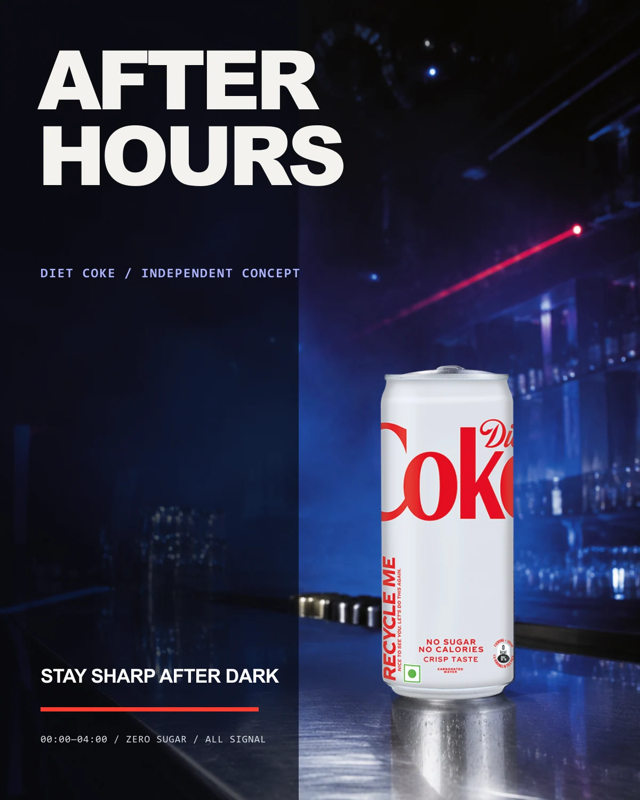
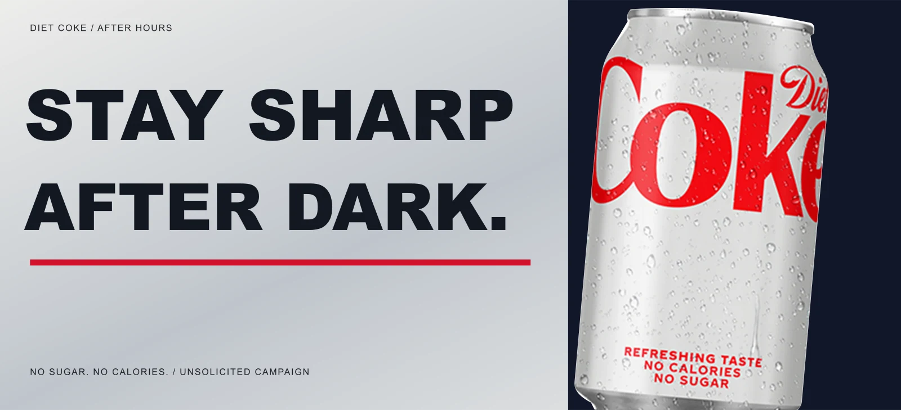
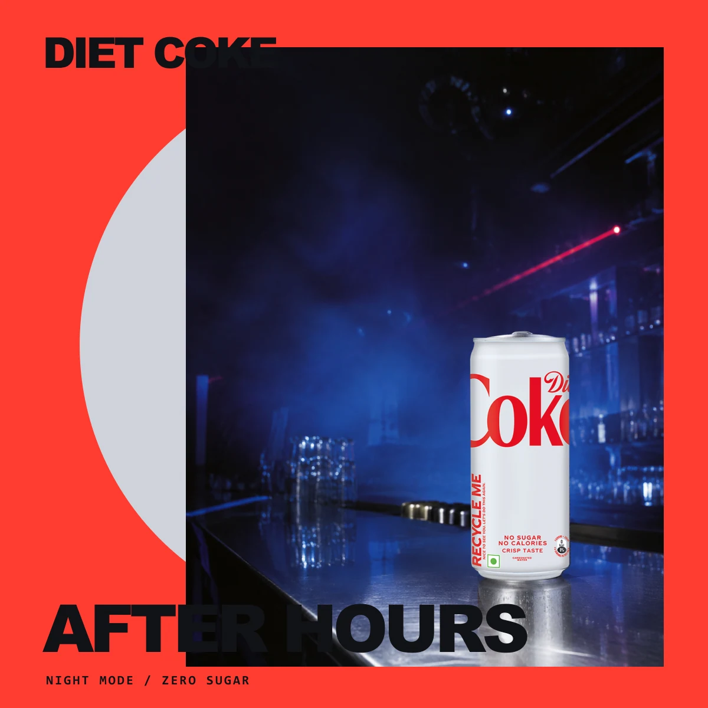
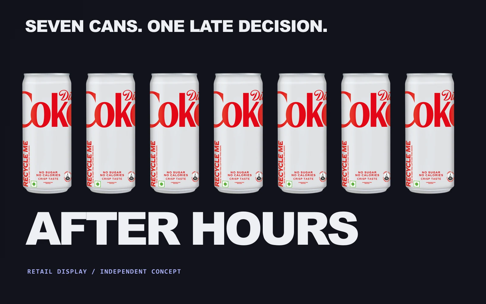
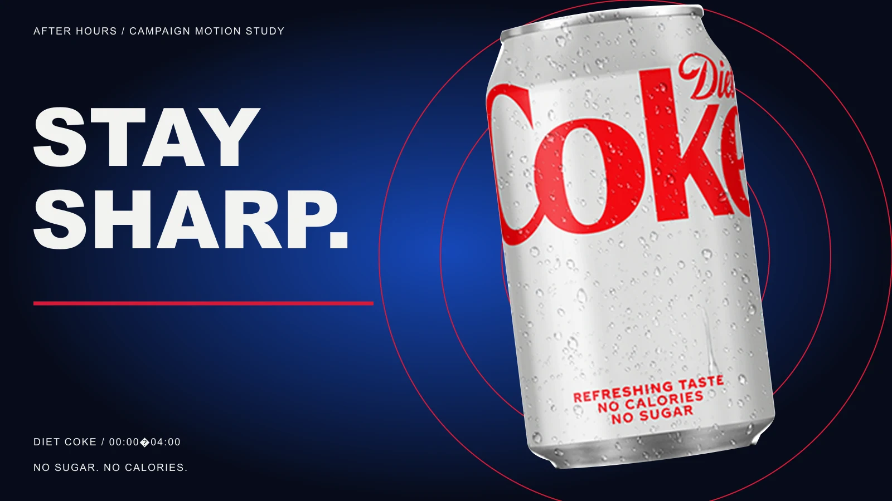

Typography
Archivo Black for blunt, compressed headlines; IBM Plex Mono for venue-like product details.
Unsolicited concept study / 2026
A familiar silver can. An unfamiliar hour.
Campaign / Art direction / OOH
Unsolicited concept study. Not affiliated with or commissioned by The Coca-Cola Company.
View 5 applications ↓
The communication problem
Audience & direction
Night-shift creatives, club audiences and people who want ritual and energy without another round.
A cold silver product enters a humid blue room. Condensed type behaves like venue signage while one electric-red slash keeps the campaign immediate.
A blue campaign poster pairing oversized headlines with the official silver product packshot.

A silver-and-navy billboard gives the campaign promise a clear reading order.

A circular silver field and red surface frame the Night Mode launch.

A seven-can retail rhythm with a bold shelf message.

Red frequency rings connect the product image with the Stay Sharp campaign line.
Typography
Archivo Black for blunt, compressed headlines; IBM Plex Mono for venue-like product details.
Colour
Night blue, fluorescent red, chalk white and aluminium silver.
Composition
Hard vertical crops, stage-light diagonals and a billboard that reads in one glance.
Image making
Official silver product photography, procedural aluminium study, authored light fields and metallic repetition.
Mixture formula
Selected alternate / Rejected direction
An early route made the can a tiny object inside an expansive club scene. It felt atmospheric but surrendered product recognition, so the final system keeps the can physically dominant.
AI production disclosure
The product packshot comes from Coca-Cola’s official GB product reference. The website’s can is procedurally modelled using the brand wordmark. Campaign copy, layout, lighting direction and vector graphics were authored for this unsolicited concept.
A new brief starts here.
@akxhiiiiii / Instagram